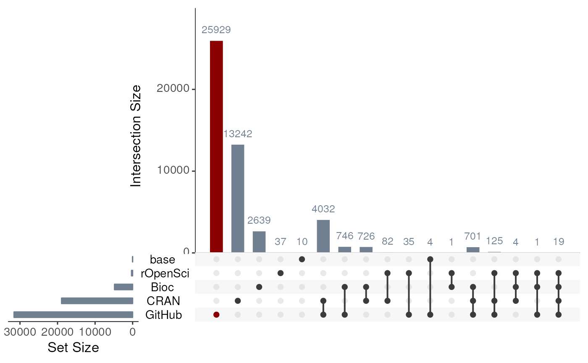

vignettes/repos.Rmd
repos.RmdNOTE: A fully functionalized version of this script is
available via the R package echogithub:
echogithub::r_repos()
for(p in c("UpSetR","githubinstall","rvest","ggplot2","data.table")){
requireNamespace(p)
install.packages(p)
}
baser <- rownames(installed.packages(priority="base"))
cran <- utils::available.packages(contriburl = "https://cran.rstudio.com/src/contrib") |> data.frame()
length(cran$Package)## [1] 18931Note: This only retrieves Bioc packages in the currently installed release of Bioconductor. Packages that are only in older versions of Bioc (and were later deprecated) will not be listed here.
### This function gives all packages, including CRAN, Bioc, and anything currently installed. ####
# bioc <- BiocManager::available()
### This only gives Bioc packages ####
repos <- BiocManager::repositories()## 'getOption("repos")' replaces Bioconductor standard repositories, see
## '?repositories' for details
##
## replacement repositories:
## CRAN: https://cloud.r-project.org
repos <- repos[names(repos)!="CRAN"]
bioc <- utils::available.packages(repos = repos) |> data.frame()
length(bioc$Package)## [1] 4837
ropensci <-
rvest::read_html("https://docs.ropensci.org/") |>
rvest::html_element("#repolist") |>
rvest::html_children() |>
rvest::html_text()
length(ropensci)## [1] 304The githubinstall package uses Gepuro Task Views for getting the list of R packages on GitHub. Gepuro Task Views is crawling the GitHub and updates information every day. The package downloads the list of R packages from Gepuro Task Views each time it was loaded. Thus, you can always use the newest list of packages on a new R session. However, you may use an R session for a long time. In such case, gh_update_package_list() is useful. gh_update_package_list() updates the downloaded list of the R packages explicitly.
However this is not actually true, as the file has not been updated since February 3rd 2018: https://github.com/hoxo-m/githubinstall/issues/41
A Pull Request was made in 2019 but it was never integrated: https://github.com/pabter/gepuro-task-views-copy/tree/76b7c4e48a704927432f328c6f898cbac0c5731c
githubinstall::gh_update_package_list()## Warning in fread(download_url, sep = "\t", header = FALSE, stringsAsFactors =
## FALSE, : Found and resolved improper quoting out-of-sample. First healed line
## 4848: <<Puriney honfleuR "Evening, honfleuR" by Seurat>>. If the fields are not
## quoted (e.g. field separator does not appear within any field), try quote="" to
## avoid this warning.
github <- githubinstall::gh_list_packages()
length(github$package_name)## [1] 34491
pkgs <- rbind(
cbind(package=baser,
repo="base"),
cbind(package=cran$Package,
repo="CRAN"),
cbind(package=bioc$Package,
repo="Bioc"),
cbind(package=ropensci,
repo="rOpenSci"),
cbind(package=github$package_name,
repo="GitHub")
) |>
data.table::data.table()
pkgs_count <- pkgs[, .(count = .N), by = repo]
pkgs_count## repo count
## 1: base 14
## 2: CRAN 18931
## 3: Bioc 4837
## 4: rOpenSci 304
## 5: GitHub 34491
#### Create data ####
upsetr_data <- lapply(stats::setNames(unique(pkgs$repo),
unique(pkgs$repo)),
function(r){
unique(subset(pkgs,repo==r)$package)
}) |> UpSetR::fromList()
#### Plot ####
upset_plot <- UpSetR::upset(data = upsetr_data,
sets.bar.color = "slategrey",
main.bar.color = "slategrey",
text.scale = 1.5,
queries = list(list(query = UpSetR::intersects,
params = list("GitHub"),
color = "darkred",
active = TRUE))
)
methods::show(upset_plot)
stats_1repo <- colSums(upsetr_data[rowSums(upsetr_data)==1,])
stats_repo <- data.table::data.table(
repo=names(stats_1repo),
total=length(unique(pkgs$package)),
count_all=colSums(upsetr_data),
count_exclusive=stats_1repo
)[,percent_all:=(count_all/total*100)][,percent_exclusive:=(count_exclusive/total*100)]
stats_repo
utils::sessionInfo()## R Under development (unstable) (2022-12-14 r83463)
## Platform: x86_64-pc-linux-gnu (64-bit)
## Running under: Ubuntu 22.04.1 LTS
##
## Matrix products: default
## BLAS: /usr/lib/x86_64-linux-gnu/openblas-pthread/libblas.so.3
## LAPACK: /usr/lib/x86_64-linux-gnu/openblas-pthread/libopenblasp-r0.3.20.so; LAPACK version 3.10.0
##
## locale:
## [1] LC_CTYPE=en_US.UTF-8 LC_NUMERIC=C
## [3] LC_TIME=en_US.UTF-8 LC_COLLATE=en_US.UTF-8
## [5] LC_MONETARY=en_US.UTF-8 LC_MESSAGES=en_US.UTF-8
## [7] LC_PAPER=en_US.UTF-8 LC_NAME=C
## [9] LC_ADDRESS=C LC_TELEPHONE=C
## [11] LC_MEASUREMENT=en_US.UTF-8 LC_IDENTIFICATION=C
##
## time zone: UTC
## tzcode source: system (glibc)
##
## attached base packages:
## [1] stats graphics grDevices utils datasets methods base
##
## other attached packages:
## [1] BiocStyle_2.27.0
##
## loaded via a namespace (and not attached):
## [1] gtable_0.3.1 xfun_0.35 bslib_0.4.2
## [4] ggplot2_3.4.0 htmlwidgets_1.6.0 devtools_2.4.5
## [7] remotes_2.4.2 processx_3.8.0 callr_3.7.3
## [10] generics_0.1.3 vctrs_0.5.1 tools_4.3.0
## [13] ps_1.7.2 curl_4.3.3 fansi_1.0.3
## [16] tibble_3.1.8 highr_0.9 pkgconfig_2.0.3
## [19] data.table_1.14.6 desc_1.4.2 assertthat_0.2.1
## [22] lifecycle_1.0.3 farver_2.1.1 compiler_4.3.0
## [25] stringr_1.5.0 textshaping_0.3.6 munsell_0.5.0
## [28] httpuv_1.6.7 htmltools_0.5.4 usethis_2.1.6
## [31] sass_0.4.4 yaml_2.3.6 pillar_1.8.1
## [34] later_1.3.0 pkgdown_2.0.7 crayon_1.5.2
## [37] jquerylib_0.1.4 urlchecker_1.0.1 ellipsis_0.3.2
## [40] cachem_1.0.6 sessioninfo_1.2.2 mime_0.12
## [43] tidyselect_1.2.0 rvest_1.0.3 digest_0.6.31
## [46] stringi_1.7.8 dplyr_1.0.10 purrr_0.3.5
## [49] bookdown_0.31 labeling_0.4.2 rprojroot_2.0.3
## [52] fastmap_1.1.0 grid_4.3.0 colorspace_2.0-3
## [55] cli_3.4.1 magrittr_2.0.3 utf8_1.2.2
## [58] pkgbuild_1.4.0 withr_2.5.0 prettyunits_1.1.1
## [61] scales_1.2.1 promises_1.2.0.1 rmarkdown_2.19
## [64] httr_1.4.4 gridExtra_2.3 ragg_1.2.4
## [67] memoise_2.0.1 shiny_1.7.4 evaluate_0.19
## [70] knitr_1.41 UpSetR_1.4.0 miniUI_0.1.1.1
## [73] profvis_0.3.7 rlang_1.0.6 Rcpp_1.0.9
## [76] githubinstall_0.2.2 DBI_1.1.3 xtable_1.8-4
## [79] glue_1.6.2 selectr_0.4-2 BiocManager_1.30.19
## [82] xml2_1.3.3 pkgload_1.3.2 jsonlite_1.8.4
## [85] plyr_1.8.8 R6_2.5.1 systemfonts_1.0.4
## [88] fs_1.5.2